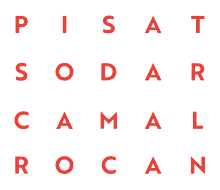

CAMBIAR PALABRAS
En esta actividad, cada estudiante debe transformar una palabra en otra mediante la incorporación de una letra.
-
La educadora entrega las letras necesarias para formar la primera palabra y propone escribirla.
-
Luego agrega una nueva letra y pregunta dónde debe ubicarse para formar la segunda palabra.
-
Si es necesario, se prolongan los sonidos para reconocer la posición de la letra incorporada.
-
Se repite el procedimiento con los demás pares.
PISA – PISTA;
SODA – SORDA;
CAMA – CALMA;
ROCA – RONCA
